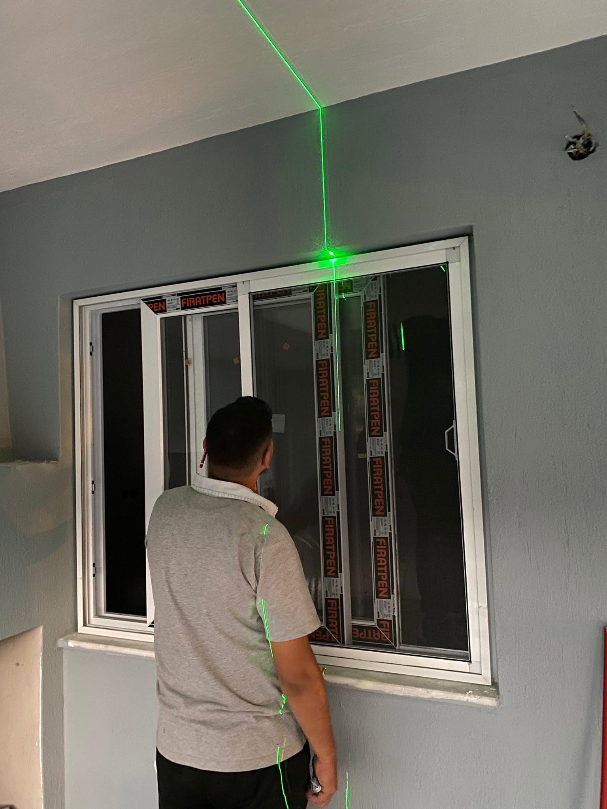
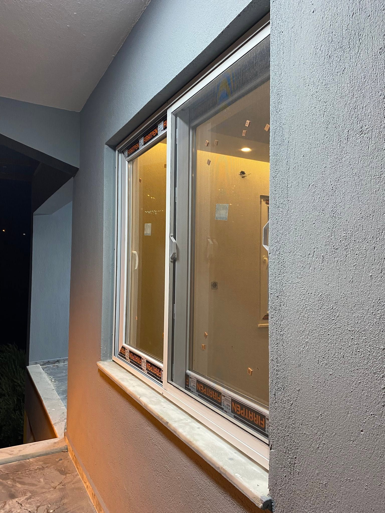
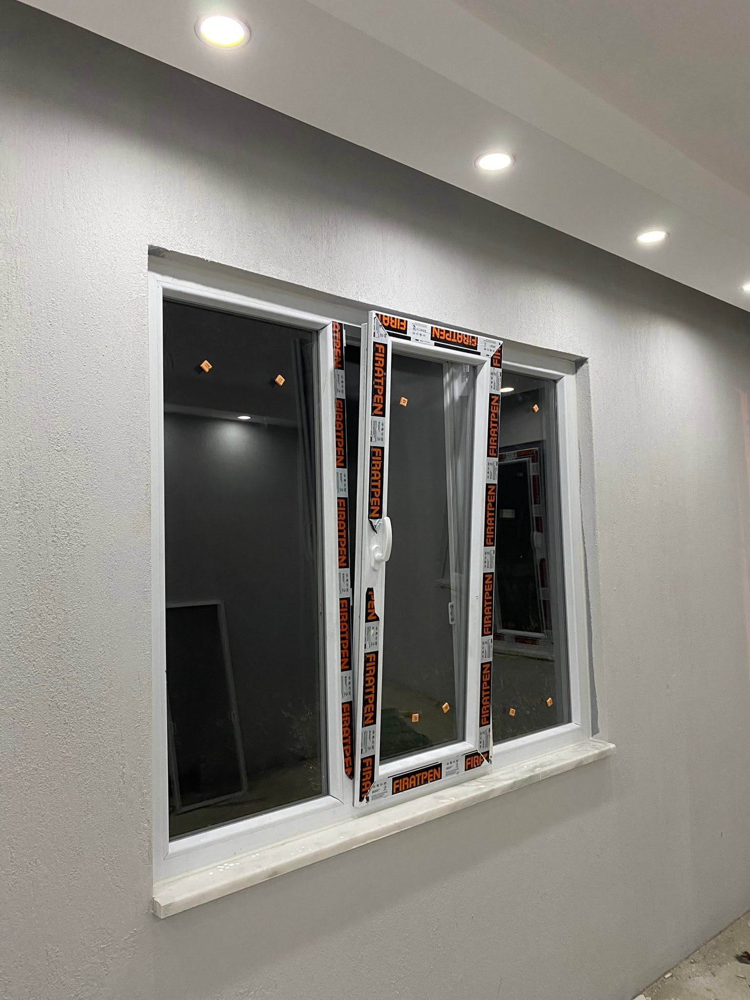
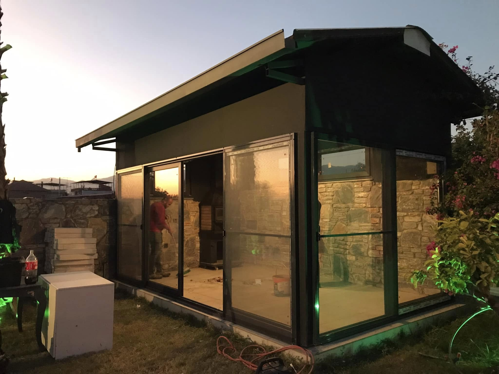
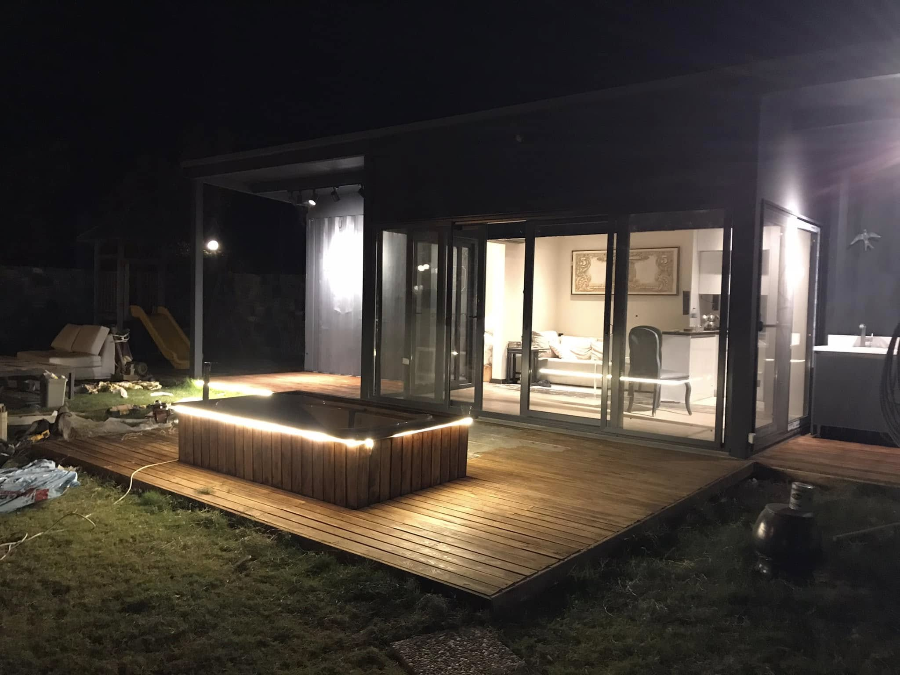
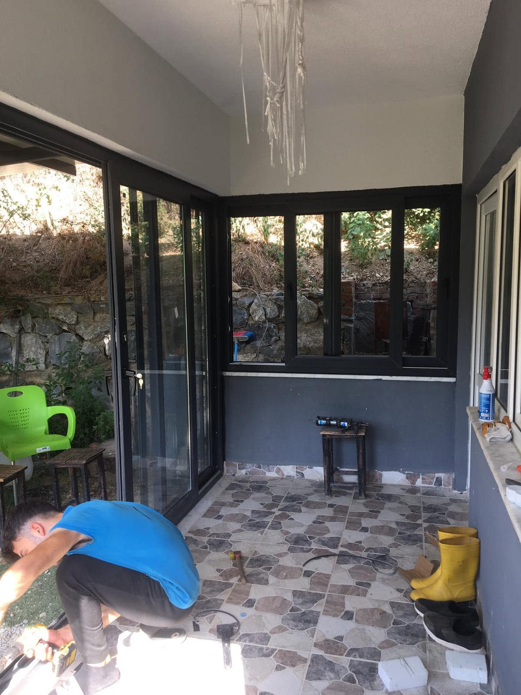
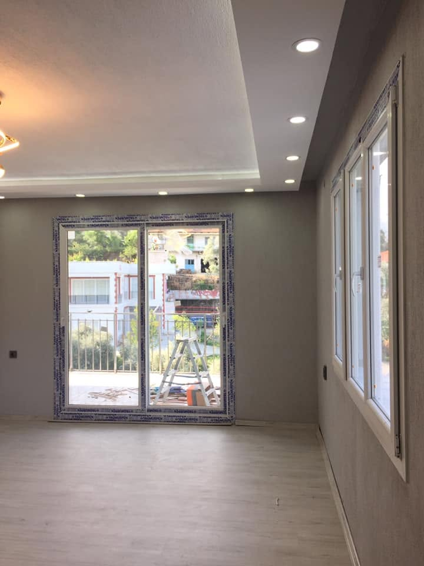

PVC Kapı Sistemleri
Dayanıklı kapılar, iç ve dış kapılar ve özel tasarım çözümleri. Isı ve ses yalıtımı sağlayan kaliteli sistemler.
PVC KAPI · PENCERE · DOĞRAMA
Ok Pen; kaliteli malzeme, usta elleriyle kurulum ve garantili hizmet sunarak 25 yıldır müşteri memnuniyetini sağlamaktadır.
Bilgi Alın
İHTİYACINIZI DİNLİYOR, UYGUN ÇÖZÜMÜ BİRLİKTE BELİRLİYORUZ.
OK PEN HAKKINDA
Çeyrek asırlık tecrübemiz ile kaliteli PVC kapı, pencere ve doğrama sistemleri sunuyoruz. Her proje için özel çözümler geliştiriyor, uzman ekibimizle kusursuz kurulum yapıyoruz.
Müşteri memnuniyeti bizim önceliğimiz. Tüm ürünlerimize garanti sunuyoruz ve hızlı teknik destek sağlıyoruz.
HİZMETLERİMİZ
Dayanıklı kapılar, iç ve dış kapılar ve özel tasarım çözümleri. Isı ve ses yalıtımı sağlayan kaliteli sistemler.
Gürültü koruması, enerji verimliliği ve zarif tasarım. Tüm iklim koşullarına uyumlu pencere çözümleri.
Tüm yapı türlerine uygun özel doğrama tasarımları. Profesyonel kurulum ve uzun ömürlü çözümler.







İLETİŞİM
Bilgi almak, ölçü ve teklif talebinizi iletmek için bize ulaşın.
Ara: 0538 432 20 17 E-posta: okismail1702@gmail.com